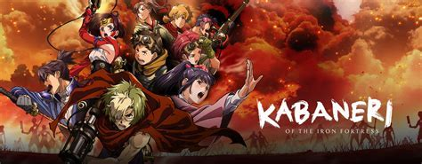
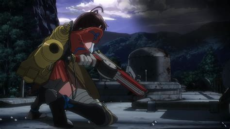
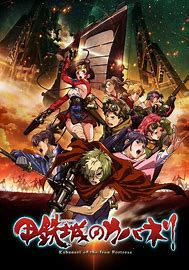
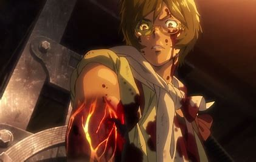

Kabaneri of the Iron Fortress

Fiche descriptive:
Nom: Kabaneri of the Iron Fortress
Type: Shonen
Studio d'annimation: Wit Studio
Nombre d'épisodes: 12 (+ 3 épisodes nommés : The Battle of Unato)
Saison 1 disponible gratuitement sur Crunchyroll
The Battle of Unato est disponible sur Netflix
Résumé:
Lors de la révolution industrielle,
les Kabane, des créatures mortes-vivantes, menacent l’humanité.
Une simple morsure et la personne qui en est marquée rejoint leur camp.
Malheureusement, il n’existe qu’un seul moyen de les tuer :
transpercer leur cœur recouvert d’une plaque de fer.
Un jour, Ikoma, un ingénieur, parvient à tuer un Kabane, cependant,
ce n’était sans compter sur la morsure d’un des leurs.
Il arrive à empêcher la blessure de se propager dans son corps, conservant sa part d’humanité.
Il devra alors lutter pour sa survie, entouré de ceux qui font le vœu de son exécution,
et d’une mystérieuse fille prénommée Mumei, ainsi que pour celle de l’humanité,
qui tentera d’échapper aux Kabane en se déplaçant de gares en gares,
à bord d’un train appelé le Koutetsujou.
Avis:
Kabaneri of the Iron Fortress nous transporte dans cet univers postapocalyptique,
dans lequel combats, émotions, horreur et peur seront présents.
Dès le premier épisode, cet anime frappe fort de part sa beauté,
et le choc provoqué par tous les rebondissements qui s’y produisent.
Les personnages sont chacun dotés d’une force, qu’elle soit mentale ou physique,
qui nous fait leur porter une incroyable admiration, et nous attacher à eux. L’opening,
KABANERI OF THE IRON FORTRESS par EGOIST,
est tout simplement entrainant, et donne une énergie supplémentaire à cet anime.
Ce dernier nous procure alors tout au long une excitation nous empêchant de nous ennuyer,
et souhaitant connaitre la suite de l’histoire, quel qu’en soit le prix.


